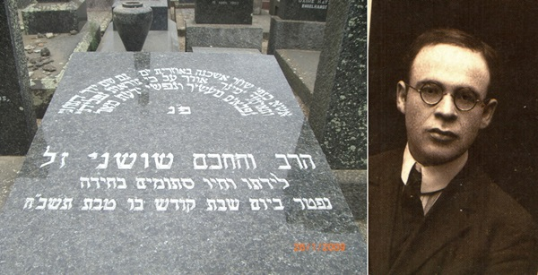

הגאון המסתורי שהתורה כולה הייתה פרושה לפניו, נולד באירופה, ירד לירושלים וגלה ממנ
הגאון המסתורי שהתורה כולה הייתה פרושה לפניו, נולד באירופה, ירד לירושלים וגלה ממנה בגיל צעיר, חי חיי נווד תמהוניים מרצון, ובחר לחיות תחת מעטה של מסתורין >> בשנת תש”ז פגש את הרבי בפריז לשיחות לימוד עמקניות; ובאחרית חייו, פגש את מזכירו של הרבי ואמר לו מילים אחדות המלמדות על היכרות קרובה >> מיהו איש המס
הגאון המסתורי שהתורה כולה הייתה פרושה לפניו, נולד באירופה, ירד לירושלים וגלה ממנה בגיל צעיר, חי חיי נווד תמהוניים מרצון, ובחר לחיות תחת מעטה של מסתורין >> בשנת תש”ז פגש את הרבי בפריז לשיחות לימוד עמקניות; ובאחרית חייו, פגש את מזכירו של הרבי ואמר לו מילים אחדות המלמדות על היכרות קרובה >> מיהו איש המסתורין “חכם שושני” שגם על מצבתו נכתב ש”לידתו וחייו סתומים כחידה”?

שני המשוחחים היו עסוקים בפלפול למדני, שקועים בו ראשם ורובם. כמו מתוך התלהבות פנימית בוערת, החלו השניים להתהלך בבית הכנסת הלוך ושוב, מצד אל צד. עיניהם מרוכזות, קמטים חרושים במצחם תלמים–תלמים, אות של ריכוז והעמקה. בר אוריין בוודאי היה שומע את סוגיות בש”ס “מתעופפות” מפי השניים; ‘ראשונים’ ו’אחרונים’, מדרשים וסברות וחיקורי סוגיות מכל מקום.
דמותו של הראשון מבין השניים הייתה מוכרת. למרות שהלה לא היה אלא אורח בפריז שהגיע לשהות בה לזמן קצר — רבים כבר הכירוהו. גבה קומה בעל עיניים חודרות, לבוש בפשטות אך מרשימה; חליפה אפורה קצרה, כובע “קנייטש”. זקן שחור קטנטן עיטר את פניו. היה זה הרמ”ש, חתנו של הרבי הריי”צ, כפי שנהגו להזכירו ביראת כבוד — לימים הרבי מה”מ, שעשה אותה תקופה בפריז, כאשר בא להקביל את פני אמו הרבנית מרת חנה. למרות היותו אורח, רבים מיהודי העיר הספיקו להכיר את הדמות הרוחנית הכבירה המתהלכת ביניהם, דמות שהותירה חותם עמוק על נפשות מאות מקרב הקהילה החרדית בעיר.
ומי הייתה הדמות השניה עמה שוחח הרבי בגאונות כבירה בלתי מצויה כדבר איש אל רעהו? מי היה האיש שיכול היה “לשאת ולתת” עם הרבי בכל מכמני התורה וסוגיות הש”ס, ולטייל בהם בקלילות כה מרשימה?
ובכן, בסוד תעלומת האיש נעוץ סיפורנו. איש לא ידע את זהותו האמיתית, מלבד העובדה שהציג את עצמו כ”חכם שושני” ולעתים הציג עצמו כ”פרופסור שושני”. יותר מכך, איש לא ידע עליו דבר. הוא היה בעל קומה בינונית, סנטרו מגולח. מתי מעט ממכריו ידעו רק זאת, כי הוא בקי בש”ס ובראשונים בעל פה. בעלי שמועה סיפרו גם על בקיאותו בספרי קבלה. למרות זאת, איש לא ראהו מעולם מעיין בספר, מה שהוסיף לחידה שאפפה את האיש.
מי היה “חכם שושני” זה שלא בכדי דבק בו הכינוי “החידה של המאה ועשרים”?
בשורות הבאות ננסה להתחקות מעט על עקבותיו, ובכך נצטרף לרבים שניסו לתהות על זהותו של הגאון העלום.
נווד שהפך לחידה
כאמור, חכם שושני, למרות חידת זהותו, ידוע כי היה גאון אדיר, בעל ידע עצום במקצועות התורה והיהדות. הוא ידע לצטט בעל פה ללא מאמץ ממגוון מקורות בכל מכמני התורה; לא הייתה שאלה שלא השיב עליה מיידית עם ציטוט מלא ומראי מקומות. לא מעט אנשים היו באים אליו ובפיהם שאלות קשות בהלכה וביהדות, ובעצם בכל תחומי החיים ושושני היה עונה להם מיד.
מלבד זאת, ידע על בוריין שפות רבות ובעל ידע עמוק במקצועות רבים במדעי הרוח, בפילוסופיה ובמתמטיקה. הוא קרא ספרים ללא הרף ובמהירות רבה. חוקרים שחקרו את דמותו, כתבו עליו דברי הערכה “תלמיד חכם שלא רבים דוגמתו, שוחה כשחיין אלוף בים התלמוד, מדרשים, מפרשים ראשונים ואחרונים ומדעים חיצוניים… ידיעותיו שופעות כמעיין המתגבר ומדרשי הפליאה שלו מפליאים את אוזני שומעיו ודיבורו שוטף בריבוי לשונות. ואם על ידען אומרים שהוא ‘עילוי’, הרי על כגון זה אומרים שהוא ‘גאון’”.
אחד מתלמידיו הרבים והמפורסמים, היה חתן פרס נובל מר אלי ויזל שהעיד עליו: “אני יודע שלא הייתי נעשה לאיש שהנני, ליהודי שהנני, אילולא בא יום אחד נווד מדהים, מעורר אי–שקט, והודיע לי שאיני מבין שום דבר”. גם הפילוסוף היהודי–הצרפתי הנודע עמנואל לוינס כינה אותו “מורה מופלא”, וייחס לו את יכולתו לפענח סוגיות בגמרא. הוא חזר והדגיש שהבנתו בתלמוד (כפי שבאה לידי ביטוי בספרו “תשע קריאות תלמודיות”) אינה אלא “צל צלו” של מה שלמד ממורו הגדול חכם שושני.
מכריו ותלמידיו הכירו אותו רק בשם “מר שושני”, אבל גם זה היה כנראה רק כינוי שבחר לעצמו. במסלול חייו עבר בין מזרח אירופה, צרפת, ארצות הברית, ארץ ישראל, צפון אפריקה ודרום אמריקה. נווד נצחי, תמיד לבוש כמו קבצן; ערירי, מקבץ ימי שהות ואוכל אצל מארחיו. מקפיד בקנאות שלא להסגיר את עברו ותולדותיו.
ועם זאת, בכל אחד מהמקומות בהם ביקר, השאיר שובל ארוך של מעריצים נדהמים מהיקף הידע, היהודי והכללי, ומהיכולת לשזור את תחומי הידע השונים לחידושים מרתקים. ויזל כתב בזיכרונותיו שבכל מקום בעולם שבו סיפר על שושני תמיד נתקל באנשים שגם הם פגשו בו בשלב כלשהו של חייהם והושפעו ממנו עמוקות: “בס. פרנסיסקו ובמונטריאול, בקראקאס ובמרסיי, כשהזכרתי את שושני, הופיע חיוך בפניהם של כמה מאזינים וידעתי כי כרגע הדלקתי מחדש את הניצוץ”.
רבים ראו בו את אחד המורים הגדולים של המאה העשרים בעולם היהודי, ובו–בזמן גם אחד מדמויות המסתורין של המאה; מין כוכב שביט אנושי שעבר בשמיה והסעיר את כל מי שפגש בו.
עד היום לא ידועות בבירור שנת הולדתו, הארץ שבה נולד. אף שמו האמתי שנוי במחלוקת. ההערכה היא שהוא נולד אי–שם במזרח אירופה; ההשערות נעות בין ליטא לרוסיה הלבנה (בלארוס). ויזל קובע בזיכרונותיו כי שמו האמתי של שושני היה מרדכי רוזנבאום על פי הוכחות שונות שאסף על דמותו.
רבים אחרים, לעומת זאת, הגיע למסקנה ששושני אינו אלא הלל פרלמן, תלמיד–חכם המוזכר בשניים ממכתביו של הרב אברהם יצחק הכהן קוק. שושני עצמו סיפר כי למד בראשית המאה העשרים אצל הרב קוק בארץ ישראל ונסע אחר כך לארצות הברית. באחד ממכתביו כתב הרב קוק לידידו בארה”ב, הרב מאיר בר–אילן, כי הוא מבקשו שיקבל יפה את הלל פרלמן, ומציגו בתיאור “הרב החריף ובקי, שלם ורב תבונות”.
עדות נוספת התומכת בגרסה ששמו היה הלל פרלמן, באה מפיו של יהודי בשם משה שוובר, אשר התגורר בירושלים. מר שושני התגורר בביתו במשך מספר שנים. כשנשאל שוובר פעם לזהותו של שושני, השיב: “למר שושני הייתה אחות שהתגוררה בניו–יורק, וכלתהּ סיפרה לי בפירוש כי שמו האמיתי של מר שושני היה הלל פרלמן”.
רוזנבאום או פרלמן או “שושני”, לא משנה מה שמו, ידוע כי גדל במזרח אירופה כילד פלא, עילוי שמגיל מוקדם ידע את כל התנ”ך והש”ס בעל פה. ההערכה היא שהיה בעל זיכרון צילומי נדיר, שמוחו עבד כמו סורק ממוחשב בן–זמננו. רוזנברג ואחרים מספרים — מהמעט שהצליחו לדלות משושני על עצמו — שאביו היה מסתובב אתו בעיירות מזרח אירופה ומרוויח כסף מהפגנת כישורי הזיכרון המדהימים של הבן. ייתכן והיה משהו טראומטי מאוד בילדות הזאת, משהו שאיש ממכריו מעולם לא פיענח, אשר הפך את שושני לנווד נצחי ולמי שאינו מסוגל למסד את כישוריו העצומים.
כמה עדויות מספרות שנראה בשנות העשרים של המאה במרוקו ובאלג’יריה. בשנות העשרים גם שהה בארה”ב.
לאורך כל השנים, היה שושני, למרות גאונותו, נווד עני. מכריו מספרים כי תמיד הוא נראה מלוכלך ולא מסופר. על ראשו היה חובש תמיד אותה מגבעת קטנטנה, והעדשות העבות והמאובקות של משקפיו היו מטשטשות את מבטו. מי שהיה פוגש אותו ברחוב מבלי להכירו היה מתרחק ממנו בשאט נפש — והוא? הוא פשוט היה נהנה מכך.
בבית משפחת זילברשטרום
בתקופה של טרום מלחמת העולם השניה, הכירו ר’ בנימין נחום זילברשטרום, תלמיד חכם מופלג בעצמו שהתגורר בפריז, והיה ידוע כמי שסייע רבות ליהודים הפליטים. הרב זילברשטרום אף היה מעמודי התווך של הקהילה החרדית בעיר, ושם הכיר את שושני.
בימים ההם, בטרום פרוץ מלחמת העולם השניה, ביקשה הנהלת הקהילות היהודיות הרשמיות, ה”קונסיסטואר”, לחולל רפורמות במנהגים המסורתיים המקובלים מדורי דורות, ור’ בנימים נחום היה אחד הלוחמים כנגד מגמת הפשרנות.
כשתכפו הרפורמות בקרב יהדות צרפת, ביקש ר’ בנימין נחום להעניק חינוך יהודי פנימי לבנו הגדול אהרן מרדכי זילברשטרום — והוא מצא בחכם שושני דמות שתוכל להשכיל את בנו חכמה ובינה.
חכם שושני, למרות שלא היה לו בית משלו וחי על פרנסות מזדמנות, התרחק ככל האפשר מהתרועעות עם בני אדם — אלא אם כן נאלץ היה לכך. זו הסיבה שהוא לא נענה בקלות להצעתו של ר’ בנימין נחום, אך כאשר הפציר בו שוב ושוב ואף הציע לו מגורים בביתו לתקופה בלתי–מוגבלת — הסכים. מאז החל להתגורר בבית משפחת זילברשטרום וכל צרכיו היו על אבי המשפחה.
ילד כבן שמונה שנים בלבד היה אהרן מרדכי כאשר החל ללמוד עם הגאון האלמוני. “במשך כשנה לימד אותי גמרא עם תוספות ומפרשים, והרבה לשוחח עימי בשעות אחר–הצהריים כל אימת שרצה בכך”, סיפר לימים ר’ אהרן מרדכי אשר היה לדמות מופת חינוכית ומי שהיה בין מקימי “רשת אהלי יוסף יצחק” בארץ הקודש.
על אף שחכם שושני חלק את חייו עם בני משפחת זילברשטרום עמם התגורר, המשיך להקפיד מכל משמר על סוד חייו ואיש לא הצליח לתהות על חייו האישיים או אף להציץ בהם. הוא היה מקבל באמצעות הדואר מכתבים רבים, אך הוא שמר על פרטיות מוחלטת ומעולם לא הרשה לאיש לדעת מה תוכנם. ייתכן והיו אלו שאלות שנשאל על ידי תלמידיו.
הצלת חיים
קיץ ת”ש. לאחר מערכה לא ארוכה במיוחד, הצליחו הגרמנים לכבוש חלקים נרחבים מצרפת.
עם הכיבוש הנאצי, ניסה שושני להימלט לשווייץ הניטרלית, אך בעת מנוסתו נתפס — כך לפי אחד הסיפורים — על ידי משמרות גרמניים שעמדו בדרכים והוא נלקח לחקירה בגסטאפו. בחקירתו הסתיר את זהותו היהודית, וטען כי הוא יליד אלזס, וכי הוא מכהן כפרופסור למתמטיקה באוניברסיטת שטרסבורג. הקצין הנאצי החוקר לעג לקבצן המתיימר להיות פרופסור, ואמר לו: ”שגית שגיאה חמורה. בחיים האזרחיים הייתי בעצמי פרופסור למתמטיקה”.
חכם שושני הציע לקצין הנאצי עסקה: הוא יציג לו חידה מתמטית; אם הקצין יפתור אותה — הוא יוציאו להורג. אם ייכשל — יצטרך לשחררו. כעבור זמן קצר שוחרר חכם שושני, ומיהר להימלט לשווייץ בדרך לא דרך.
על פי גירסה אחרת, הוא נעצר על ידי הגסטאפו, ומכיוון שלא היו לו מסמכים, ועקב העובדה שהיה נימול — הואשם כיהודי. הוא הצליח לשכנע את חוקריו כי הוא נימול כמוסלמי. לשם בירור הדברים הוזמן ה’מופתי’ הראשי של צרפת לתא מאסרו כדי לברר את טענותיו. בתום חמש שעות של שיחה, דרש המופתי לשחרר את האיש באמרו שהוא קדוש מוסלמי…
לאחר סיום המלחמה, חזר לצרפת, תחילה לשטרסבורג ואחר כך לפריז. שוב התקיים בחסדי יהודים שהכירו בכישוריו ושוב משיעורים פרטיים.
אז, בתקופה ההיא הכיר את הרבי מה”מ, שהגיע, כאמור, לביקור בן כמה חודשים בפריז, החל מחודש אדר ועד חודש סיון תש”ז.
כעבור עשרות שנים גילה ר’ אהרן מרדכי כי לשושני המסתורי היה קשר גם עם הרבי, בו מצא תלמיד חכם מופלג כמותו שאפשר יהיה לדון איתו בענינים שונים:
“עד כמה שאני זוכר השניים הסתגרו לפחות פעם אחת בחדר ספרייתו של ר’ שניאור זלמן שניאורסאהן ז”ל או באולם ששימש אז בית–מדרש (בקומה השלישית, ליד חדרי המגורים של ר’ זלמן), וכמדומני שבעת הפגישה העומדים מחוץ לחדר שמעו מבפנים קולות רמים. לא ידוע לי אם הפגישה הייתה יזומה על–ידי אחד מהם או בהשגחה פרטית”.
כעבור שנים פגש ר’ אהרן מרדכי את חכם שושני בארץ ישראל ושאלו על הרבי. הלה השיב מיד שהרבי בקי היטב בבבלי ובירושלמי ובמדעים רבים וכו’.
פגישת מזכיר הרבי עם מר שושני
במשך חייו הסתובב מר שושני כנווד ערירי ברחבי העולם: באירופה, בארץ ישראל, בארצות הברית, באורוגוואי, ובארצות נוספות.
עד שנת תשי”ב שהה שושני בצרפת, אז החליט שהגיעה העת לנדודים נוספים. הוא בא לארץ ישראל, לאחר שאחד מתלמידיו סידר לו תעודת לידה מזויפת, שרק בזכותה זכה גם בדרכון. בארץ ישראל בילה את זמנו בעיקר בקיבוצים דתיים. הפרופסור צבי בכרך, לימים מרצה להיסטוריה באוניברסיטת בר אילן, פגש אותו בקיבוץ בארות יצחק: “יום אחד מופיע אדם שאף אחד לא הכיר ואומר: ‘תנו לי חדר ואוכל, ואני אלמד אתכם מה שתרצו’. הוא היה נראה מוזנח לחלוטין, כמו קבצן. חשבנו שזה סתם תמהוני, אבל הרי אי–אפשר לגרש אדם כזה. אז נתנו לו איזה צריף מעץ ולאחר כמה זמן אמרנו: בואו נשמע מה יש לו ללמד. הוא נתן שיעור בגמרא, תוך שהוא מתקן שגיאת דפוס של פירוש התוספות, והכל בעל פה. זה היה כל כך מרשים, שהחלטנו שניתן לו מקום בתוכנו”.
כך חי כמה חודשים בבארות יצחק, ומשם עבר לקיבוץ סעד שבנגב ולקיבוצי עמק בית שאן.
במשך השנים התקבצו סביבו תלמידים ומעריצים למאות. כל שומעיו היו מהופנטים מעוצמתו ומהיקף ידיעותיו בתורה, ברוחב ובעומק, והוא עודדם להשתפר ולהתקדם כל הזמן. מספרים עליו שהיה יכול להסביר במשך שעות שורה אחת מהגמרא, בלי לחזור על אותו דבר פעמיים. בעזרת פיסקה קצרה מהגמרא הוא היה מסביר את כל הבעיות האקטואליות באותם ימים.
יחד עם זאת, נחשב היה למורה קשה. המיתוס של דמותו נבנה, בין היתר, גם על בסיס האובססיות השונות שלו. הגדולה שבהן היתה השמירה הקנאית על פרטיותו והביוגרפיה שלו. תלמידיו מספרים שלא הסכים שיעלו אותו לתורה כדי ששמו האמתי לא ייוודע. בכרך מספר שפעם נכנס לחדרו של שושני וראה דף שנפל על הרצפה. בתמימות ביקש להרימו וראה שם שורות בכתב–ידו הצפוף של שושני, משהו שנראה כמו נוסחאות מתמטיות; “הוא התנפל וחטף לי את הדף מתוך ידי”.
כל חייו היה חי בדוחק. עם זאת, היו שמועות שעליבותו מסתירה כסף גדול שקיבל כשכר לימוד מאנשים ידועי שם שביקשו שילמד אותם. כך, למשל, הוסברה יכולתו לנדוד בעולם. הסופר אלי ויזל גורס שמדובר ביותר משמועות: “פעם, בצרפת, ישבנו ולמדנו בחדר שלי, כשפתאום ראה חיילים נכנסים לבניין. הם באו בסך הכל לבדוק את התעודות שלנו, אבל הוא נבהל וברח ואמר לי לשמור על המזוודה שלו. זו היתה מזוודה ישנה ועלובה, אבל פתאום היא נפתחה בידיים שלי וראיתי שם כסף וזהב. סגרתי אותה, וכשהוא חזר לא דיברתי על כך מלה”.
בין השנים תשט”ו–תשט”ז התגורר שושני שוב בצרפת, ובאמצע שנות החמישים נסע שושני לתחנתו האחרונה, במונטווידאו שבאורוגוואי, בעקבות הזמנה של תלמיד לשעבר מצרפת שהיגר לשם.
מזכירו של הרבי, הרה”ח ר’ בנימין קליין ע”ה, הגיע באחת השנים לעיר במסגרת ‘מרכז שליחות’ כדי להפיח רוח יהדות בקרב יהודי המקום, והוא ניצל את ההזדמנות לפגוש ביהודי המסתורי, אשר נודע כי היה לו קשר עם הרבי.
“באחת הנסיעות שלי לאורוגוואי עם חבר לשליחות, שמענו שיש אדם בשם פרופסור שושני שהכיר את הרבי עוד מאירופה”, סיפר הרב קליין. “חיפשנו אותו במשך זמן ולבסוף מצאנו אותו יושב באחד מבתי הכנסת. הוא היה לבוש בגדים ישנים מאוד, ובכלל היה נראה מוזנח. כשפגשנו אותו, סיפרנו לו שאנו חסידי חב”ד.
‘אתם מכירים את הרבי’? שאל אותנו.
“בוודאי, אנחנו רואים אותו בכל יום”, השבנו.
אך הוא אמר לנו: “אתם רואים אותו, אבל אינכם מכירים אותו”…
“לאחר מכן ביקש מאתנו שהרבי ישלח לו טלית גדול וש”ס.
“כשחזרנו לניו יורק, דיווחנו על כך לרבי והרבי הורה שנמלא את בקשתו. לאחר זמן נודע לי שלאחר פטירתו קברו אותו באותה טלית ששלחנו בהוראת הרבי”…
* * *
בשבת קודש פרשת וארא, כ”ו בטבת תשכ”ח, השתתף בסמינר לצעירים במונטווידאו, בירת אורוגוואי. שניים מתלמידיו השתתפו אף הם. בליל שבת התמוטט שושני, כנראה מהתקף לב. תלמידו שלום רוזנברג מספר שבילו זמן רב בחיפוש אחר רופא. “זה שהגיע לבסוף לא היה בעל הכישורים המתאימים”, ומר שושני נפטר מהתקף לב.
גם בשלב זה של סוף חייו, לא סרה חידת זהותו, כאשר במקום ארע דבר פלא מדהים: בכיסו נמצא פתק ובו מספר טלפון בשווייץ של אדם שהכירו. כאשר התקשרו למספר הטלפון, התברר כי אותו אדם נפטר 24 שעות קודם לכן…
סודותיו נלקחו אתו אל הקבר ובכך נותרה אישיותו עלומה בחייו וכך גם במותו. אפילו על מצבתו לא נכתב שמו הפרטי כי אם זאת בלבד “הרב והחכם שושני ז”ל. לידתו וחייו סתומים כחידה”.
מר שושני נפטר מהתקף לב באותה שבת. גם בשלב זה של סוף חייו, לא סרה חידת זהותו, כאשר במקום ארע דבר פלא מדהים: בכיסו נמצא פתק ובו מספר טלפון בשווייץ של אדם שהכירו. כאשר התקשרו למספר הטלפון, התברר כי אותו אדם נפטר 24 שעות קודם לכן…